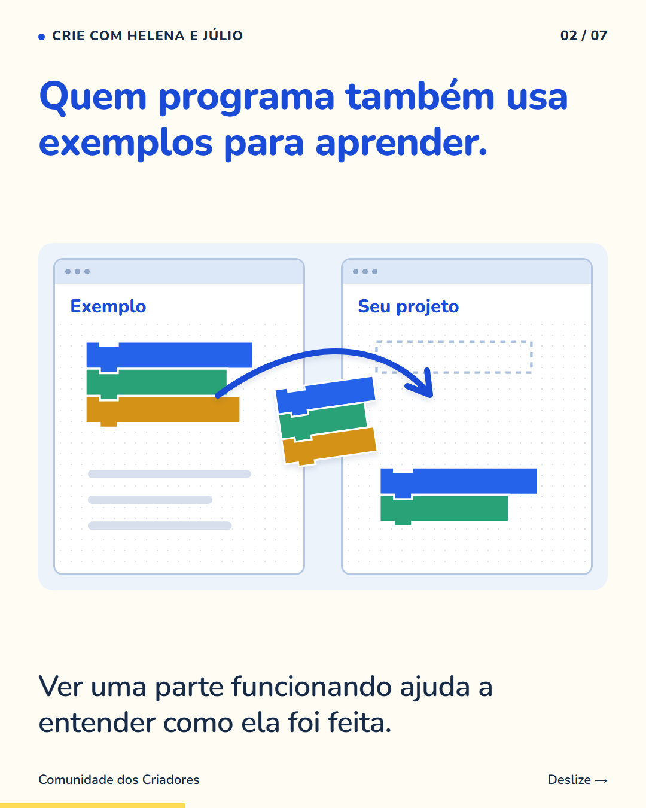
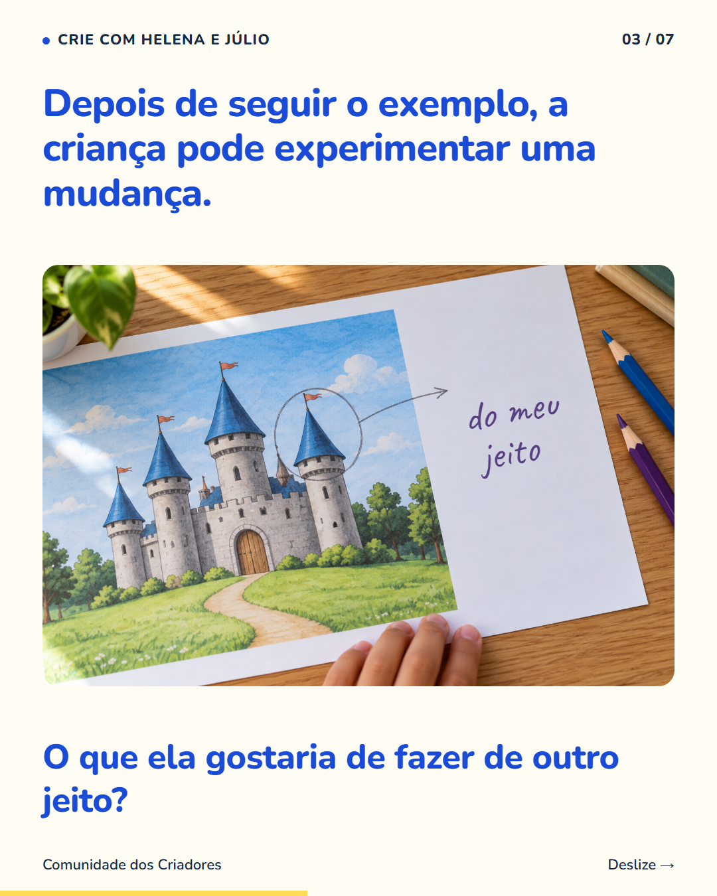
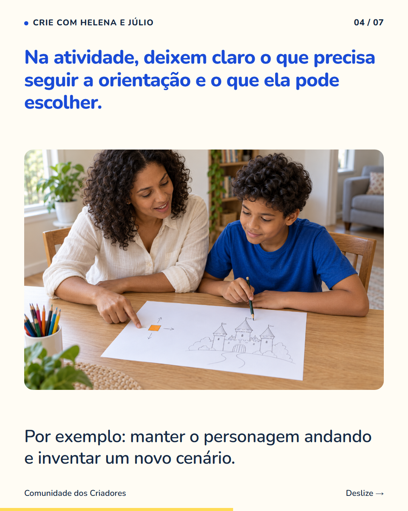
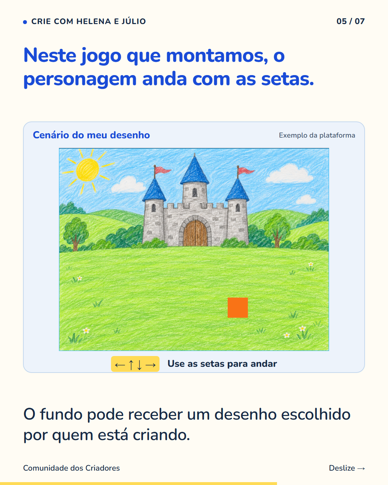
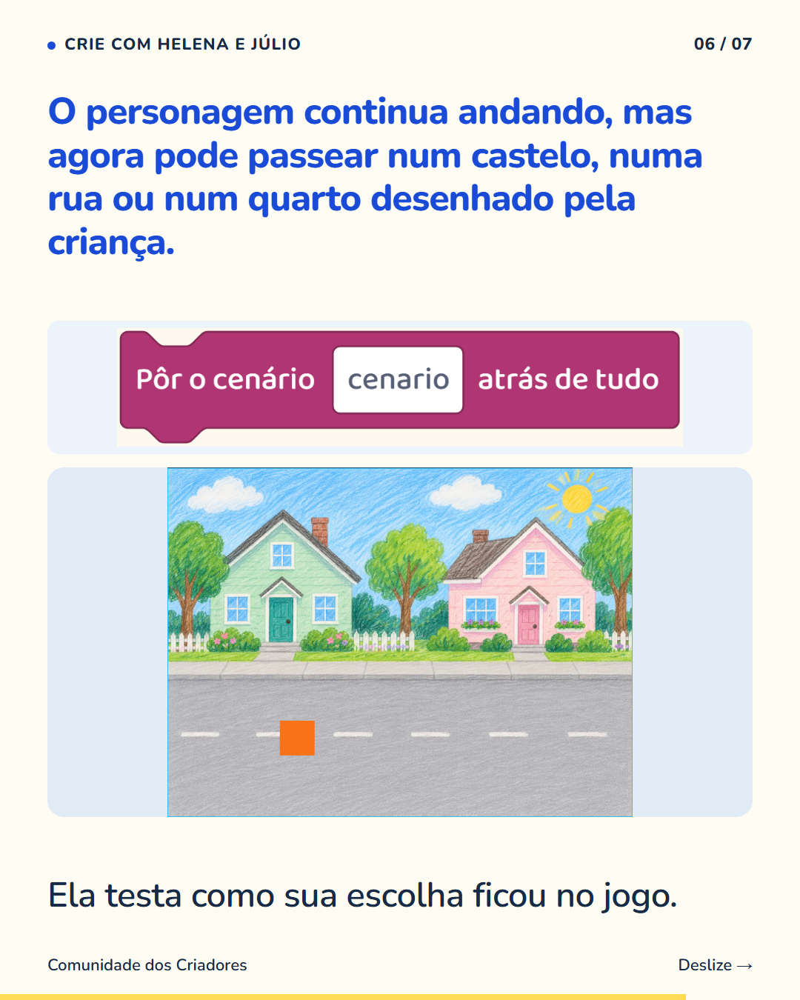
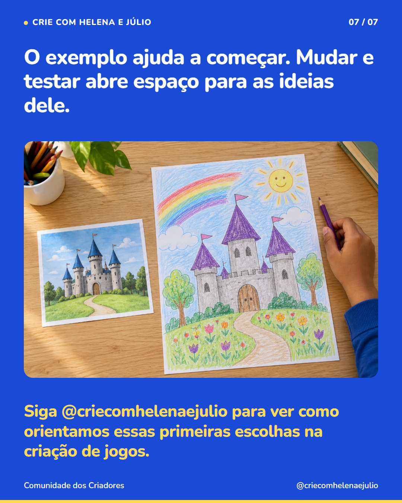

7 slides · 1080 × 1350 · Copy revisada · Do modelo às escolhas no Cenário do meu desenho






Seguir um exemplo pode ser uma etapa da aprendizagem, com espaço para escolhas depois. Se seu filho pede um modelo, mostre uma parte e conversem sobre como ela funciona. Em seguida, escolham algo que ele possa mudar. Não precisa inventar o projeto inteiro na primeira tentativa. Na criação de jogos, isso pode acontecer com um cenário. O personagem já anda, e a criança coloca um desenho seu no fundo. Depois testa se o personagem aparece bem e se o caminho combina com a ideia que teve. Ela parte de uma orientação e toma decisões sobre a própria criação. Aos poucos, vocês podem aumentar a quantidade de escolhas, conforme ela entende o que está fazendo. Siga @criecomhelenaejulio para ver como orientamos essas primeiras escolhas na criação de jogos.